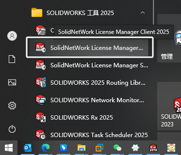
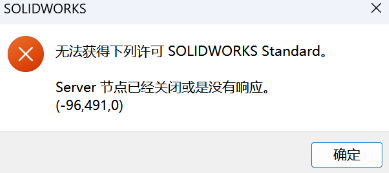
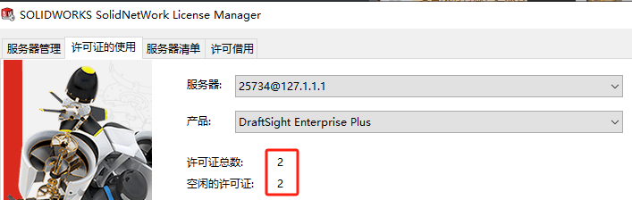
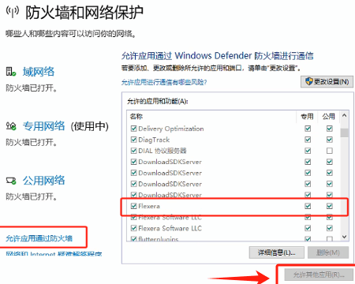
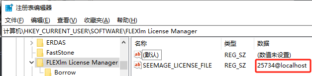
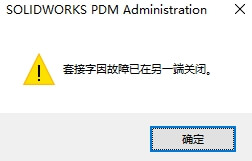
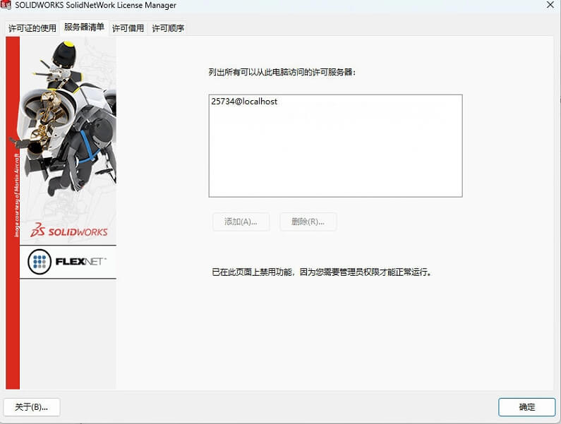
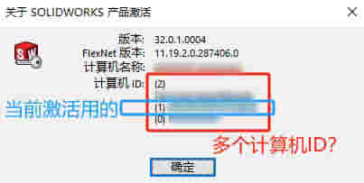
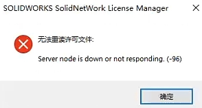

网络版许可问题
无论是服务器还是客户端，你都需要学会打开这个SOLIDWORKS服务器程序（或客户端程序）进行问题排查。
客户端：SolidNetWork License Manager Client 20xx
服务端：SolidNetWork License Manager Server 20xx

服务器故障
SOLIDWORKS 无法在 SolidNetwork 许可环境中启动。提示用户：无法获得下列许可 Server 节点已经关闭或是没有响应(-96,491,0)，或是服务器节点出现故障或没有响应

方法：核实 SolidNetWork 许可管理程序是否已启动，并检查“许可证的使用”选项卡以确保有免费的许可可用。

若是在服务器端发现许可服务程序正常并且正常显示许可数量。则需要判断是否是客户端于服务器的网络连接问题。
无网络连接
原因：网络版正版用户，因许可服务器访问问题。一般需检查与许可服务器的通信、防火墙问题，（了解许可问题是否只存在特定电脑）
Ping测试：
1、在服务器端确保’FlexNet Licensing Service’ 和 ‘SolidNetWork License Service’这两个服务是正常运行的。
2、尝试客户机——服务器互ping测试，确保客户端可以ping通服务器。
telnet测试：
1.键入 ping 必须接收到一条信息，告知 Ping 成功。
2.远程登录telnet <服务器名称> <端口号> ，其中 <端口号> 是 SolidNetWork 许可管理程序使用的端口。 默认端口值为“25734”。
如果连接成功，DOS 提示符将变为空白，仅显示一个闪烁的光标 这两种测试都必须通过。 如果任一测试或两种测试都失败，则客户端与服务器之间没有足够的 TCP/IP 连接供 SolidNetWork 许可环境正常运行。
防火墙测试：
1、可以在【控制面板\系统和安全\Windows Defender 防火墙\自定义设置】尝试关闭防火墙，
2、在服务器上的防火墙设置中，新建出站和入站规则，确保开通25734和25735两个端口。确保telnet <IP> 25734接通。
许可文件限制
检查是否已正确读入许可文件。
防火墙
在关闭防火墙后，客户端连接正常
1、检查防火墙进出站
2、设置允许程序

无法获得许可
用户信息
有些时候打开许可程序发现是有许可的，但是启动软件就提示：无法获得许可。
你需要检查下当前用户注册表内是否有许可服务器信息的登记：注册表位置如下：如果是空白，则根据您的服务器地址完善信息，如下图
1 | 计算机\HKEY_CURRENT_USER\SOFTWARE\FLEXlm License Manager |

内部的 FLEXlm 错误
内部的 FLEXim 错误:请向 Globetrotter 软件公司报告,(-76.61026 0)
方法：重启电脑后恢复正常。
正盗版混用
正版与盗版混用,一般会提示“此SOLIDWORKS版本尚未被适当当地授权，请联系您的供应商”。可检查当前序列号的情况。
步骤：
1、一般会是安装盗版插件时注册表序列号被更改导致（已发现GearTax插件会出现此问题）。
2、进入注册表路径位置“计算机\HKEY_LOCAL_MACHINE\SOFTWARE\SolidWorks\Licenses\Serial Numbers”
3、将SolidWorks序列号改回正版序列号，并打开SW软件激活即可。
.lic许可错误
如果在同时用作 SolidNetWork 许可证 (SNL) 服务器和客户端的计算机上打开 SOLIDWORKS 时收到许可错误消息，您的计算机可能具有无效或已过期的临时 .lic 文件。
方法
1.在 Windows文件资源管理器中，浏览到
1 | C:\ProgramData\SolidWorks\SolidWorksStandaloneLic.lic |
(若无该文件夹，则需在文件资源管理器【查看-选项中】设置显示隐藏的文件和文件夹）
2.如果您看到任何具有“.lic”文件扩展名的文件，请将其重命名。
3.重新启动 SOLIDWORKS
此问题的其他症状包括：
- • 您收到“独立许可证故障”或“无法获得许可证”错误。
- • 使用 SOLIDWORKS 序列号的独立激活时，不提示激活许可证。
- • 在您转至“帮助”>“激活许可证”时没有任何反应
其他
套接字因故障关闭
套接字因故障已在另一端关闭
情况1：修改注册表内容导致

管理员禁用
已在此页面上禁用功能，因为安需要管理员权院才能正常运行，
方法：需管理员身份运行

多个计算机ID
安装过旧版本许可程序记录，在安装2024许可程序之后会出现的问题。
因此，你需要留意升级许可程序前，停用许可。

空计算机ID
是客户电脑禁止了FlexNet服务导致的，将服务启动，问题解决了
许可数量缺少
该情况可能发生在：有多条序列号的产品数量，当只激活1条的时候。此时当前激活的许可数量会覆盖原有数量，导致数量缺少。
处理方法：
是将现有的全部序列号进行【选择所有】激活
重激活
重读失败

其他
许可分版本吗
许可程序区分年份版本
许可程序不分SP版本